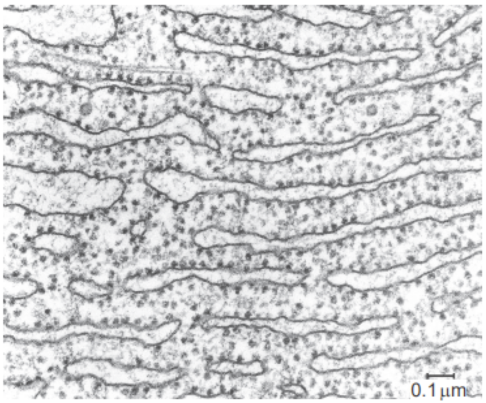
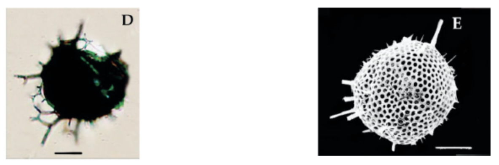
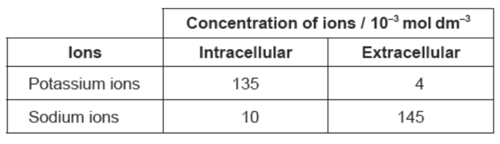
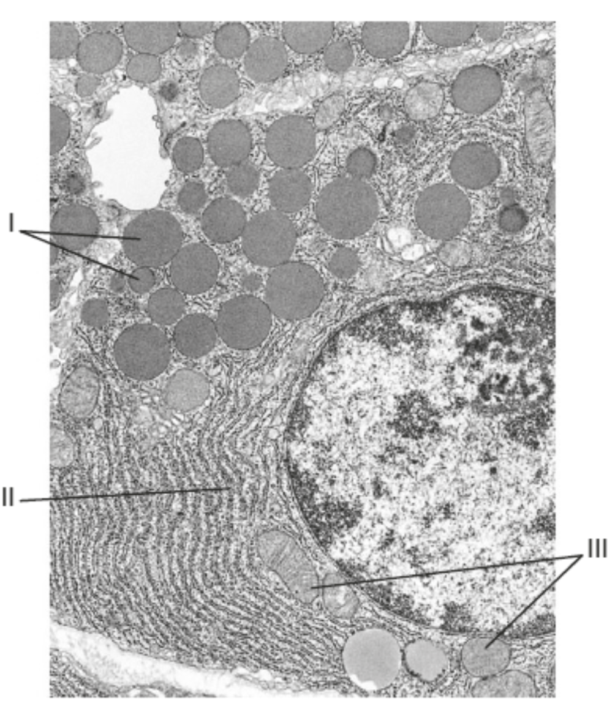
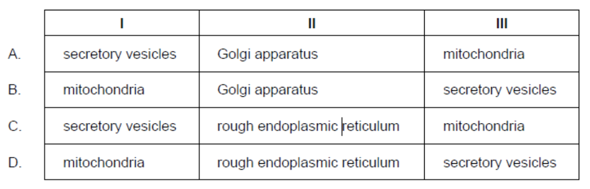

What function is performed by the part of the cell shown in the electron micrograph?

A. Locomotion
B. Synthesis of proteins
C. Movement of chromosomes
D. Breakdown of cellular organelles
B
The diagram shows the rough endoplasmic reticulum, and its purpose
is the site for protein synthesis.
The images of the radiolarian, a single-celled marine organism, were produced using a light microscope (left) and a scanning electron microscope (right).

What is a reason for the difference in quality of these images?
A. Light cannot pass through the specimen.
B. Higher magnification can be achieved with the electron microscope.
C. The resolution of the electron microscope is higher.
D. Samples are stained with methylene blue when viewed with the light microscope.
B
The most common mistake was to answer that a higher magnification can be achieved with the electron microscope. This could not be determined from the images as both were at the same scale.
Which evidence falsifies the Davson–Danielli model?
I. The presence of globular proteins within the phospholipid bilayer
II. Non-polar amino acids cause proteins to remain embedded in membranes
III. Membrane proteins remain in a fixed position inside a membrane
A. I only
B. I and II only
C. II and III only
D. I, II and III
B
III in fact helps prove the Davson–Danielli model, as it suggests that protein on membrane exists
as protein coatings. It was through fluorescent tagging that the Davson-Danielli model was false,
where proteins were seen to MOVE along the membrane.
The table shows concentrations of potassium ions and sodium ions inside and outside human cells.

What explains these concentrations?
A. Potassium ions diffuse in and sodium ions diffuse out.
B. Sodium ions diffuse in and potassium ions diffuse out.
C. Active transport pumps sodium ions in and potassium ions out.
D. Active transport pumps sodium ions out and potassium ions in.
D
The image shows an electron micrograph of a cell.

Which organelles correspond to the labels in the electron micrograph of this cell?

C
II is most definitely the rough endoplasmic reticulum (has ribosomes, near nucleus).
This leaves us with C and D. III is mitochondria, given the cristae, and I is vesicle,
given that it's inside is dark, indicating the presence of substances that it's carrying.
Which processes are involved in the development of cancer?
I. Mutations occur in oncogenes.
II. Oncogenes prevent cancer.
III. Oncogenes affect cell cycle regulatory proteins.
A. I and II only
B. I and III only
C. II and III only
D. I, II and III
B
An oncogene is a mutated gene that has the potential to cause cancer. Thus, II is wrong, and only
I and III are right.
Why do multicellular organisms exhibit emergent properties?
A. All the cells of multicellular organisms have the same function.
B. Cells of multicellular organisms do not communicate with one another.
C. Cells of multicellular organisms interact with one another.
D. Cells of multicellular organisms have similar structures.
C
A: Cells of multicellular organisms have DIFFERENT functions.
B: Cells of multicellular organisms communicate with each other to
coordinate the activities of organs, tissues and other cells.
C: Cells interact with one another forming complex structures and
functions that any one cell type alone could not perform.
D: Cells have different structures based on the cell’s specialised role.
Which statement is false about the genome?
A. The genome is an organism's entire set of genes.
B. Cells of multicellular organisms do not communicate with one another.
C. Cells of multicellular organisms interact with one another.
D. Cells of multicellular organisms have similar structures.
B
B: Not all genes are expressed in each cell. Only the necessary genes are expressed based on the specialised
function of the cell. All other statements are true.
Which statement best describes stem cells?
A. Stem cells cannot be found in the adult body.
B. The fetus is composed only of stem cells.
C. Stem cells can divide and differentiate into different types of specialised cells.
D. Stem cells have undergone specialisation and maturation.
C
A. There are still stem cells that can be found in the adult body.
B. The foetal stage of development happens from the ninth week after conception until birth, and developing organs of the fetus come from differentiated stem cells.
C. Stem cells are characterised by their capacity to divide and differentiate. These cells have the possibility of becoming any type of cell.
D. Stem cells are yet to undergo specialisation through the process of differentiation.
Paper 2 Style Questions
In relation to Louis Pasteur’s swan-necked flasks experiment...
(A) Describe how Pasteur’s experiments provided convincing evidence to falsify the concept of spontaneous generation.
(B) State the function of life in Paramecium that is carried out by: cilia.
(C) State the function of life in Paramecium that is carried out by: the contractile vacuole.
(D) Discuss the advantages and disadvantages of the use of adult stem cells.
(A) broth/culture medium for bacteria placed in flasks; broth boiled/sterilized in some flasks to kill microbes;
no clouding/signs of bacterial growth/reproduction / microbes did not appear in flasks of boiled broth;
disproves spontaneous growth where life appears from nothing
(B) Movement/Locomotion OR Feeding/Nutrition
(C) Maintain osmotic balance OR Regulate cell's water content
(D) pros: can divide endlessly / can differentiate; can repair tissues; adults can give «informed» consent for use of their stem cells
cons: adult stem cells differentiate into fewer cell types than embryonic cells; difficult to obtain/collect/find in adult body/very few available
Outline how the amphipathic properties of phospholipids play a role in membrane structure. [2 marks]
a. part hydrophobic/not attracted to water/non-polar AND part hydrophilic/attracted to water/polar; Both needed.
b. bilayer formed (formed naturally by phospholipids in water);
c. hydrophilic heads/parts face outwards AND hydrophobic tails/parts face inwards;
Draw a section of the Singer-Nicolson model of an animal cell membrane. [4 marks]
a. bilayer of phospholipids with both “tails” towards the inside «of the bilayer» ✔ This can be taken unlabeled from diagram.
b. hydrophilic/polar and hydrophobic/non-polar annotation ✔
c. cholesterol between phospholipid tails ✔
d. glycoprotein ✔
e. integral proteins/channel proteins ✔
f. peripheral proteins ✔ Allow this if it does not extend across the membrane
Describe briefly the endosymbiotic theory. [3 marks]
a. eukaryotes evolved from prokaryotes ✔
b. prokaryotes engulfed other prokaryotes without digesting them ✔
c. engulfed aerobic cell/prokaryote became mitochondria ✔
d. engulfed photosynthetic cell/ prokaryotes became chloroplasts ✔
e. these organelles have a double membrane «due to the engulfing process» ✔
f. mitochondria/chloroplasts contain DNA/small ribosomes/70S ribosomes ✔